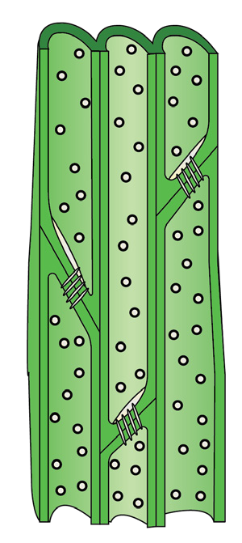
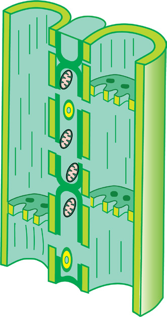

79
Student’s Book - Form Two

Biology for Secondary Schools
Pits
Tapering end

Figure 4.4: Tracheids
Xylem fibres
Xylem fibres are dead cells with lignified
walls and a central lumen. They are
narrow, elongated cells with tapering
ends, located between tracheids and xylem vessels. Their function is to provide protection and mechanical
support to xylem vessels and tracheids.
Xylem parenchyma
Xylem parenchyma are non-specialised
simple cells with thin cell walls. They are
the only living cells of xylem. They help in storing water and food in the form of carbohydrate.
Phloem
Phloem is one of the conducting tissues
in plants that conducts substances such
as hormones and food synthesised
in the leaves to all parts of the plant.
The process of transporting food from
synthesising organs such as leaves to the
storage organs such as tubers is called
translocation. Phloem is usually located
on the outer side of the vascular bundles.
Phloem is a complex tissue made up of
various specialised cells which are sieve
tubes, companion cells, phloem fibres,
and phloem parenchyma cells. Figure 4.5
shows the structure of the phloem tissue.

Companion cell
Sieve plate
Nucleus
Sieve tube elements
Plasmodesmata
Mitochondria
Figure 4.5: Phloem tissue
Sieve tubes
Like xylem vessels, a sieve tube is made up of cells that are joined end-to-end. However, the end walls of these cells are not completely broken down but have perforations or pores that form sieve plates, as shown in Figure
4.5. These cells contain cytoplasm, but they have no nucleus. Fibres run through the pores, thereby connecting adjacent sieve tube cells.
Companion cells
Each sieve tube element is associated with a living cell called a companion cell. The two cells are separated by a thin wall made up of parenchyma cells with pores called plasmodesmata, which allow exchange of materials between
08/04/2026 10:18:20